Hoteles con salones
Hyatt Ziva Los Cabos
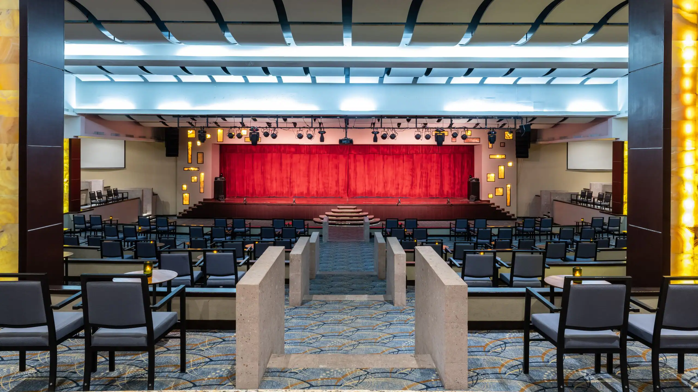
Hotel frente al mar con salones amplios y servicio todo incluido. Ideal para bodas destino y convenciones grandes.
Capacidad: hasta 800 banquete / 1,200 teatro
Servicios: paquetes todo incluido llave en mano, banquetes especializados, coordinadores internos dedicados, soporte técnico A/V avanzado.
Ubicación: Zona Hotelera, San José del Cabo
Contacto: +52 624 163 7730
Ver másCabo Azul Resort

Resort boutique con terraza frente al mar. Perfecto para bodas íntimas y retiros exclusivos
Capacidad: 50-150 personas
Servicios: coordinación integral de bodas de destino, banquetes premium a cargo del restaurante Javier's, montaje técnico para ceremonias en su capilla de cinco pisos sobre el agua
Ubicación: Zona Hotelera, San José del Cabo
+52 624 163 5100 | @caboazulresort |
Ver másSecrets Puerto Los Cabos
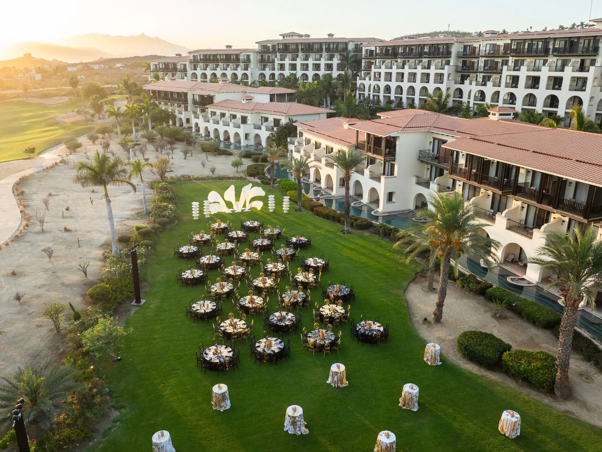
Resort todo incluido con salones climatizados y bar premium. Ideal para bodas destino y eventos corporativos.
Capacidad: hasta 560 banquete / 1188 teatro
Servicios: catering gourmet de autor, barras libres prémium, coordinadores de bodas y convenciones dedicados, soporte técnico A/V.
Ubicación: Av. Paseo los Pescadores, San José del cabo
contacto: +52 624 144 2600 | @secretsresorts |
Ver másHotel el Ganzo
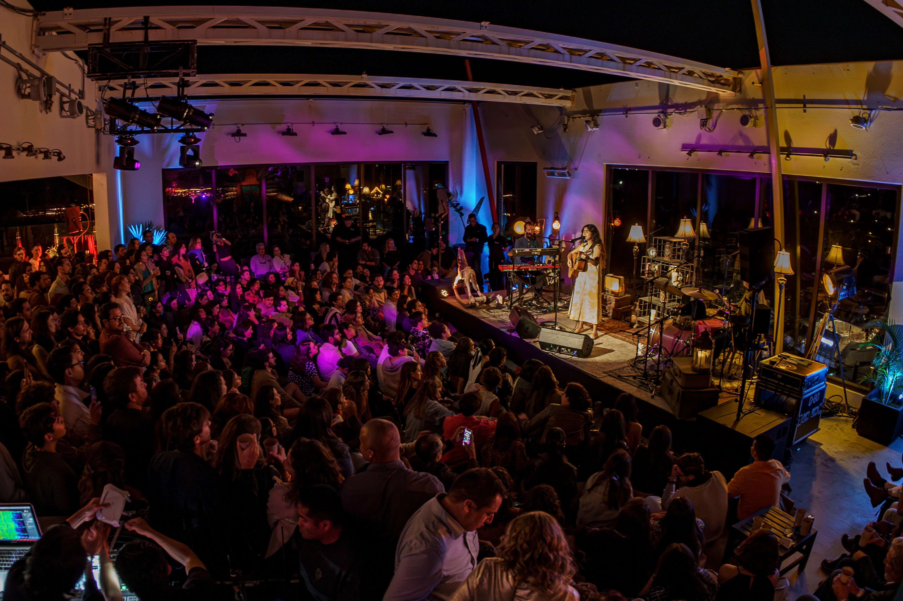
Hotel boutique con rooftop y galería de arte. Ideal para eventos culturales y lanzamientos de marca.
Capacidad: hasta 500 invitados
Servicios: catering de autor sustentable, soporte audiovisual avanzado, curaduría musical exclusiva y la opción de renta total del hotel (buyout)
Ubicación: La Playita, San José del Cabo
Contacto: +52 624 104 9000 | @elganzo
Ver másRoyal Decameron Los Cabos
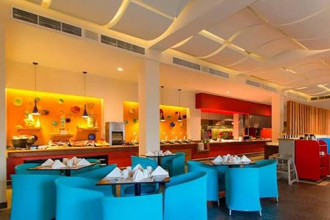
Hotel todo incluido con salones versátiles. Para bodas, eventos sociales y corporativos.
Con capacidad para hasta 1500 personas, con servicios de proyección, iluminación, elementos de sonido, filmación, fotografía, y diferentes tipos de montajes
Ubicación: Zona Hotelera, San José del Cabo
Contacto: +52 55 7500 4661 | @decameronhotels |
Ver másCasa Natalia Boutique Hotel
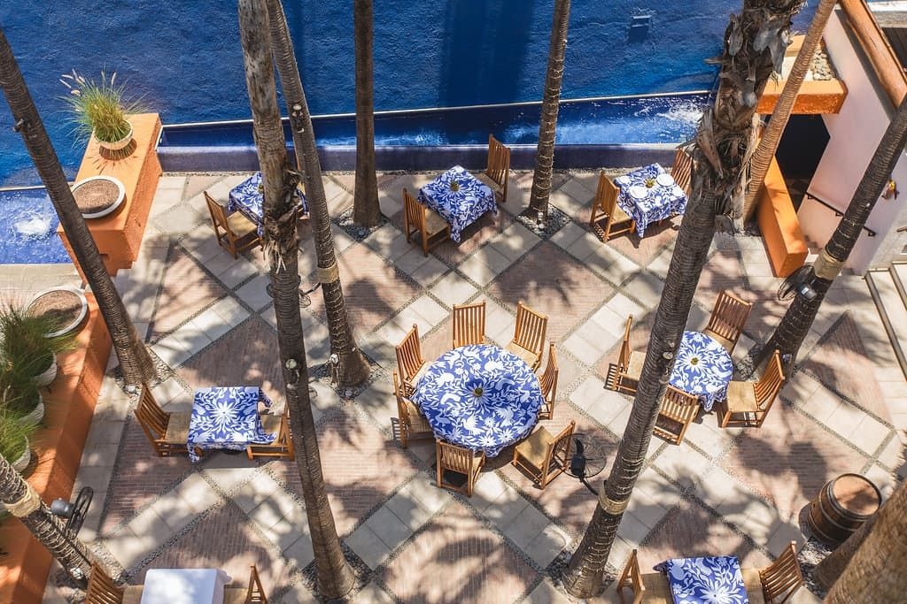
Hotel boutique en el centro histórico con terraza y patio. Ideal para bodas íntimas y cenas privadas.
Capacidad: 30 personas
Incluye: catering de fusión euro-mexicana a cargo del restaurante Mi Cocina, mixología prémium en su Palapa Bar, tarifas de grupo y buyout.
Ubicación: Centro, San José del Cabo
Contacto: +52 624 182 3709 | @casanatalia
Ver másSalones
Jardin las Casitas
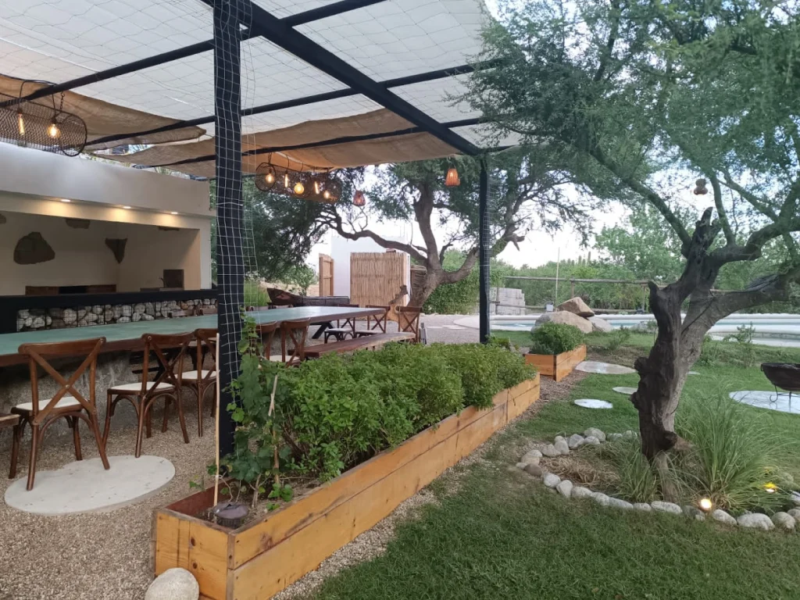
Un espacio privado para eventos sociales con instalaciones recreativas y de preparación de alimentos.
Capacidad: 40 personas
Servicios: mobiliario básico, alberca, área de preparación de alimentos, estacionamiento, áreas verdes.
Ubicación: Calle Miraflores, en la colonia Country del Mar
Contacto: +52 62 435 54336 | FB: Jardín de eventos las Casitas
Ver másSAGE Baja
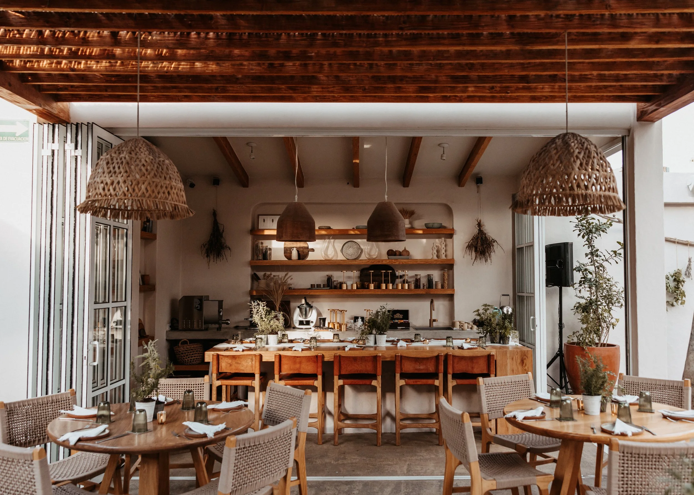
Espacio para organización y ejecución de cenas corporativas, reuniones de marca, fiestas de bienvenida preboda y celebraciones privadas
Capacidad: desde pequeñas reuniones íntimas hasta grupos medianos.
Servicios: Menús de catering personalizados, barra de coctelería de autor, coordinación y logística.
Ubicación: Centro Histórico, San José del Cabo
Contacto: +52 624 184 8628
Ver másAdenios Los Cabos
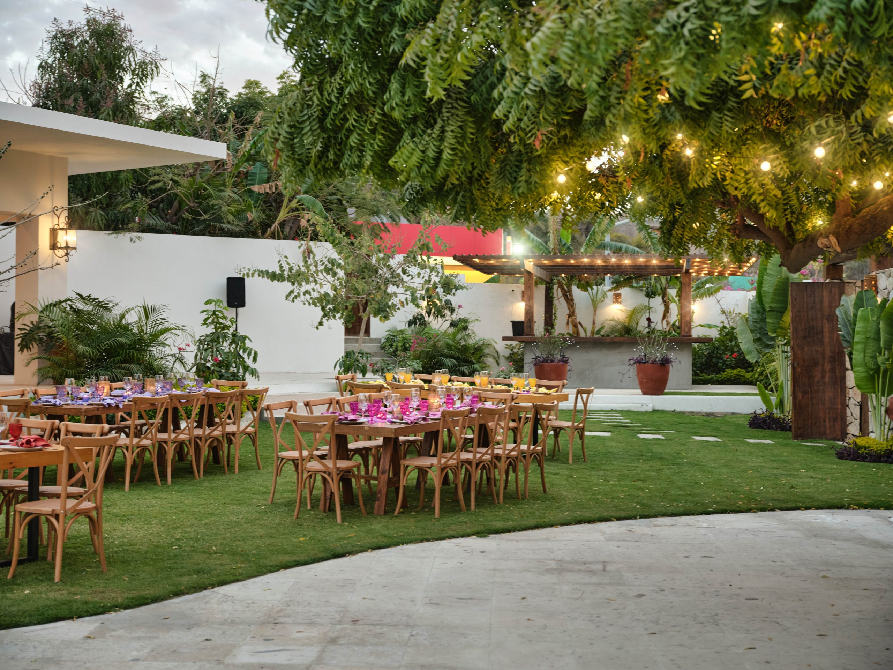
Jardín para eventos y celebraciones al aire libre.
Capacidad: desde 40 personas hasta recepciones de bodas de formato mediano y grande.
Servicios: equipamiento audiovisual, iluminación ambiental, área de barra, cocina y estacionamiento (renta de locación pura).
Ubicación: Blvd. Forjadores, Col. Mauricio Castro, San José del Cabo, B.C.S.
Contacto: IG: adenios.loscabos
LlamarLa Hacienda
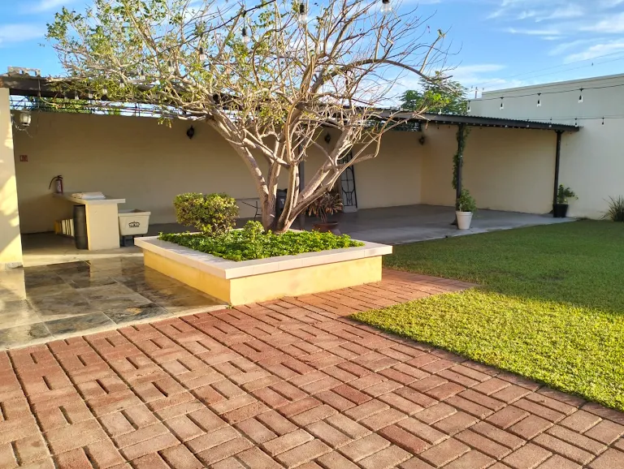
Salón para eventos familiares, infantiles y celebraciones medianas.
Capacidad: desde 50 personas hasta grupos medianos.
Servicios: Mobiliario y mantelería básica (para 50 personas), área techada, jardín y entrada con accesibilidad.
Ubicación: Ernesto Arámburo Saavedra, Col. El Zacatal, 23428 San José del Cabo, B.C.S.
Contacto: +52 624 157 0665
LlamarHacienda Boullan
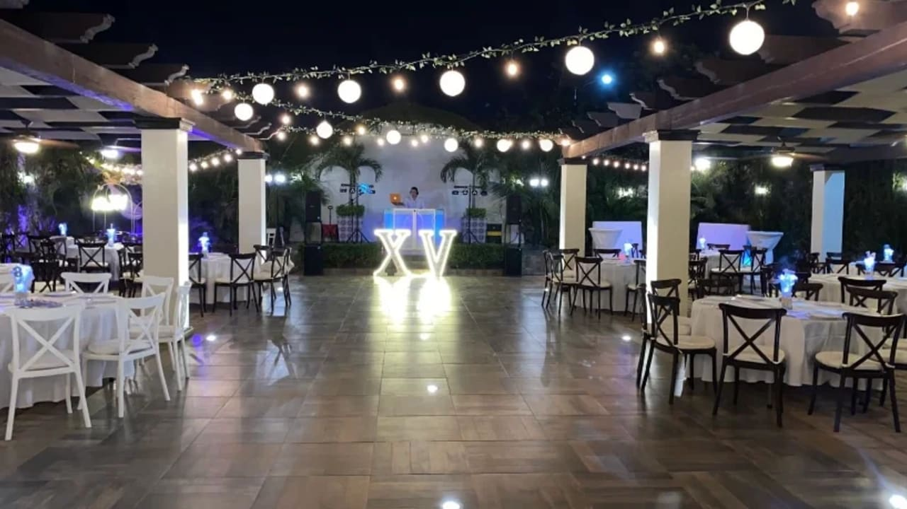
Salón y jardín de eventos de arquitectura típica mexicana ubicado en San José del Cabo. Ideal para bodas, fiestas de XV años, graduaciones y eventos corporativos.
Capacidad: 40-400 personas
Servicios: mantelería y montaje, mobiliario comoleto, zona de bar e iluminación y ambiente.
Ubicación: Calle Agustín Torres Pico, Colonia El Zacatal, C.P. 23427, San José del Cabo, B.C.S.
Contacto: +52 624 122 4242 | FB: Hacienda Bollan
LlamarFinca San José
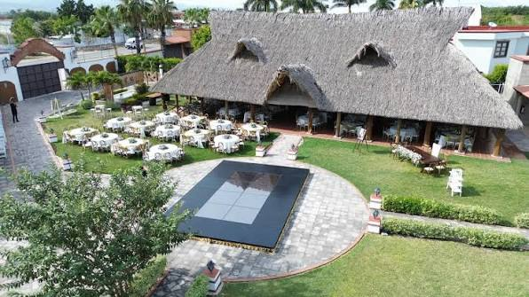
Su extensión al aire libre y su diseño versátil lo hacen idóneo tanto para formatos de etiqueta formal como para celebraciones familiares casuales.
Capacidad: 150- 350 personas
Incluye: Mobiliario completo, mantelería fina, servicio de banquetes, menaje completo, coordinación interna e infraestructura técnica (pistas, carpas, iluminación).
Ubicación: La Playita, San José del Cabo
Contacto: +52 624 117 1687 | FB: Finca San José Jardín para Eventos
LlamarCatering
Catering to Cabo
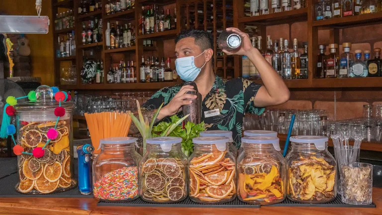
Capacidad: hasta 800 invitados
Servicios: Banquete y menús personalizados, chef privado en villa, bar y maridaje, experiencias temáticas.
Ubicación: Diag. Morelos entre Zaragoza y Obregon, Gallery District, Centro, 23400 San José del Cabo, B.C.S.
Contacto: +52 624 129 9803 | IG: @cateringtocabo
LlamarKreaccion
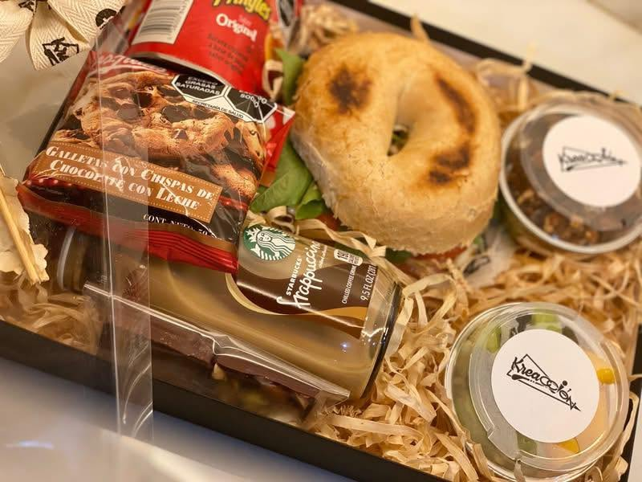
Capacidad: hasta 80 invitados.
Servicios: Chef privado, mayordomo privado, banquetes y consultoría gastronómica.
Ubicación: Calle Villa Cadiz M46 L10. Fracc, Blvd. Villa de Cortez, 23427 San José del Cabo, B.C.S.
Contacto: +52 624 130 3336 | FB: Albert the chef by Kreaccion
Ver másEat Cabo Catering
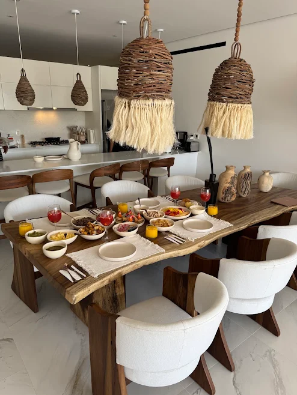
Capacidad: Más de 90 invitados.
Servicios: Chef privado, catering para eventos, clases y experiencias.
Ubicación: Carretera Transpeninsular Km 25, Plaza Vieja, Local 105, Montañas de Palmilla, 23460 San José del Cabo, B.C.S., México.
Contacto: | FB: Eat Cabo Catering
Ver másChef in House con el Chef Antonio Romero
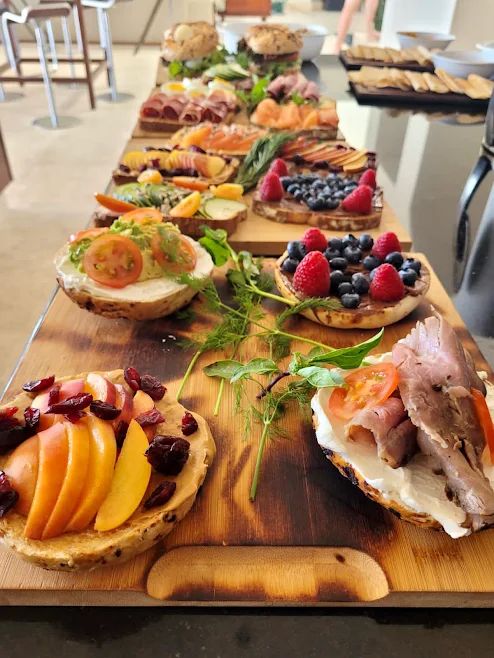
Capacidad: eventos a gran escala
Servicios: Chef privado en villa, banquetes personalizados, experiencias maritimas, catas y maridajes.
Ubicación: Diag. Calle Tifón, El Rosarito, 23407 San José del Cabo, B.C.S., México.
Contacto: +52 624 147 5738 | IG: @chefantonio_romero
Ver másSalt & Sugar Co - Catering in Cabo
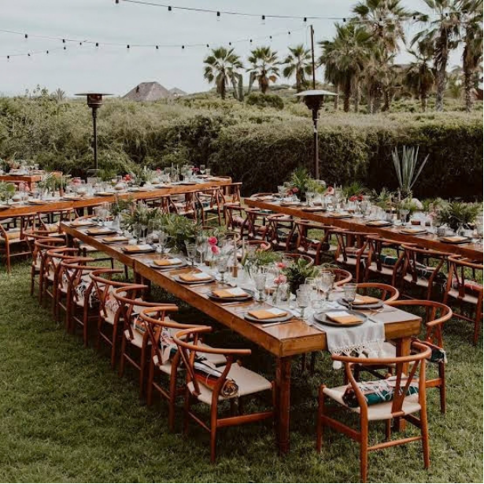
Capacidad: Hasta 500 invitados
Servicios: Banquete y culinaria, planificación integral (menús personalizados, coordinadores de personal de servicio, gestión de logística), servicios adicionales para evento (inmobiliario, iluminación decoración y más).
Ubicación: Calle Miguel Hidalgo s/n, Centro, 23450 Cabo San Lucas, B.C.S.
Contacto: +52 624 129 3409 IG: @saltandsugar_co
Ver másGourmet Cabo Catering
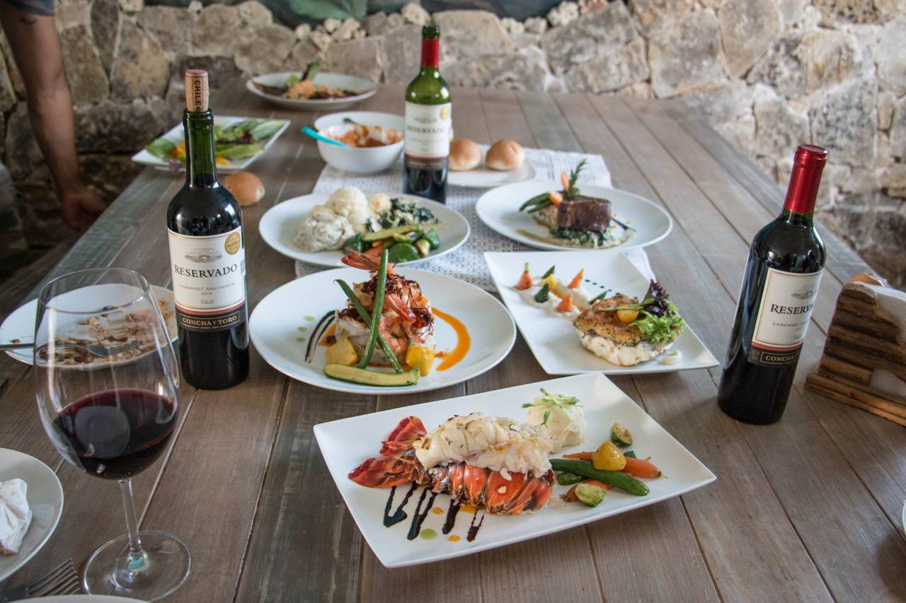
Capacidad: Hasta 200 invitados
Servicios: Chef privado, catering personalizado y experiencias culinarias en villas o condominios
Ubicación: El Tezal, en Cabo San Lucas, México (oficina comercial)
Contacto: +52 624 191 0596 | IG: @gourmetcabocatering
Ver más